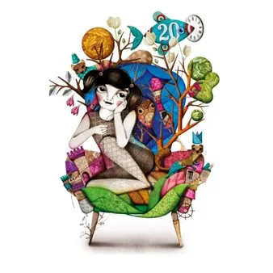

da dom 6 dic a dom 14 mar
Piccoli Palchi a Muggia 2026/2027
Piccolipalchi è la rassegna teatrale dell’Ente Regionale Teatrale del Friuli Venezia Giulia che offre al pubblico delle famiglie un’accurata selezione di spettacoli di Teatro Ragazzi prodotti da compagnie regionali e nazionali. Nei diversi Comuni coinvolti vengono allestiti…
 Indicazioni
Indicazioni
- Costi e prenotazioni
- Costo non indicato · Prenotazione non indicata
- Programma
- Programma da verificare. Apri la fonte ufficiale per orari e possibili aggiornamenti.
- In caso di maltempo
- Nessuna indicazione specifica pubblicata.
- Note
- Acquisito automaticamente dalla fonte.
L’EVENTO
Descrizione completa
Piccolipalchi è la rassegna teatrale dell’ Ente Regionale Teatrale del Friuli Venezia Giulia che offre al pubblico delle famiglie un’accurata selezione di spettacoli di Teatro Ragazzi prodotti da compagnie regionali e nazionali. Nei diversi Comuni coinvolti vengono allestiti spettacoli di teatro, musica, danza, teatro di figura, circo contemporaneo e altre forme artistiche capaci di coinvolgere non solo i più piccoli .
A Muggia, gli spettacoli in programma saranno i seguenti:
6.12.2026 - 17:30
Penny e il primo fiocco di neve
Dai 3 anni Penny ad aspettare si annoia… anche quando deve aspettare Natale. Quest’anno Penny decide che il Natale lo andrà a prendere lei, per farlo arrivare prima! Nel Villaggio del Nord dove Penny vive, il Natale non arriva mai in un giorno preciso… ma quando dal cielo cade il Primo Fiocco di Neve. Penny decide quindi di andare a cercare il Primo Fiocco di Neve, perché sia subito Natale! Per trovarlo dovrà seguire la Voce della Foresta fin dentro la Foresta Fredda e Funesta del Nord. Qui conoscerà magici abitanti che la condurranno a fare davvero i conti con il tempo. Il suo tempo. E anche quello di tutti noi.
10.01.2027 - 17:30
Sorpresa!
Dai 3 anni Uno strano personaggio vive da solo dentro una casa piena di oggetti di varie forme: cubi, cilindri, sfere, prismi, piramidi, tutti dello stesso colore. Quando torna a casa ne porta di nuovi che sistema minuziosamente. È il giorno del suo compleanno e suonano al campanello. Ecco i regali! Molto simili però alle cose che già possiede, fino a quando non arriva un regalo di colore diverso: un grande parallelepipedo che nasconde una sorpresa speciale. Senza l’utilizzo delle parole, Sorpresa! parla delle relazioni e di cosa scaturisce dall’incontro delle diversità, di scoperta e gioco, conflitto e accoglienza.
14.03.2027 - 17:30
Il più piccolo di tutti
Dai 6 anni Questa è una storia di pane e sassi, boschi spaventosi e case perdute. Protagonista è il più piccolo di tutti, un bambino silenzioso su cui nessuno avrebbe scommesso un soldo bucato. Considerato una nullità, il piccoletto capace di infilarsi ovunque senza farsi notare dovrà affrontare un Orco affamato. In un mondo dove l’apparenza inganna, chi sembra non valere nulla si trasformerà, contro ogni previsione, in un grandissimo eroe. Essere il più piccolo di tutti non è un limite, ma uno stato dell’animo tanto delicato quanto prezioso. Lo spettacolo è un inno alla fragilità, una dedica accorata alla parte più intima di ognuno di noi.
BIGLIETTI
Intero: 6 euro
Ridotto per abbonati e convenzioni Circuito ERT: 5 euro
Pacchetto famiglia (4 ingressi): 20 euro
CONTATTI +39 0432 224211 - mail info@ertfvg.it
IL PROGRAMMA
Programma e orari
Appuntamenti raccolti dalle fonti elencate. Dove manca un orario, non è ancora disponibile in questa scheda.
Programma pubblicato
- 6.12.2026 - 17:30
- 10.01.2027 - 17:30
- 14.03.2027 - 17:30
INFORMAZIONI UTILI
Prima di partire
- Controllare la fonte prima di partire.
ORGANIZZAZIONE